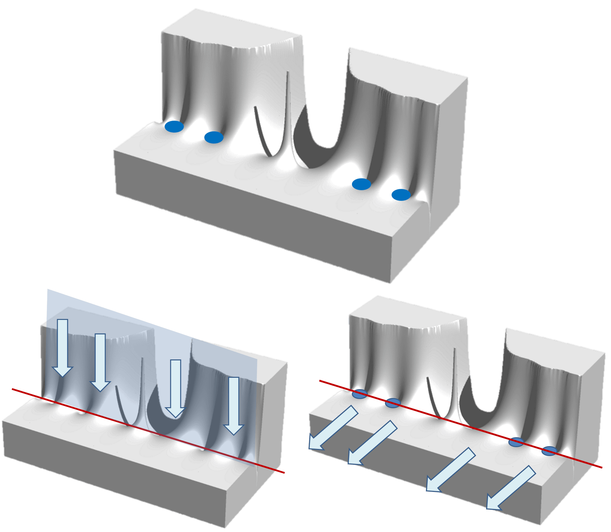
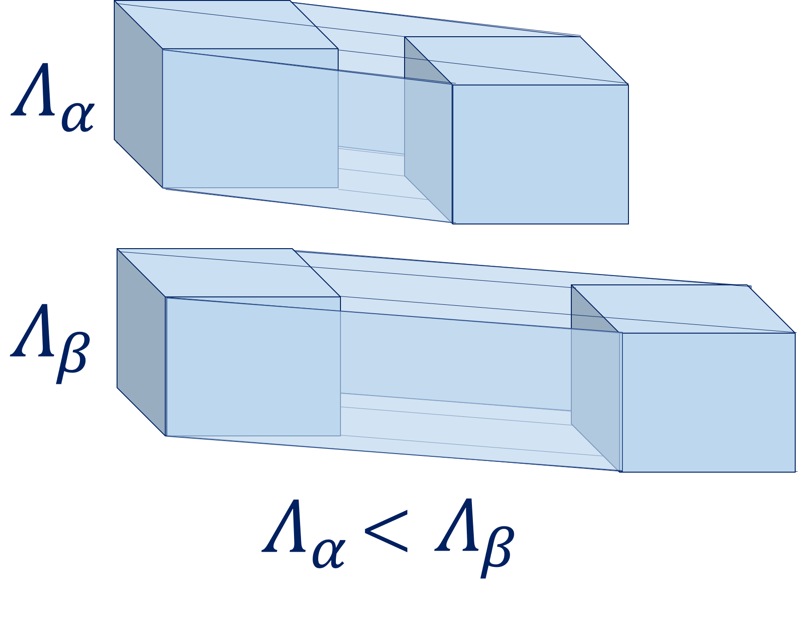

量子待ち行列理論と流体
万物は流れる．運動することを止めない．物質波の式「h=λp」を見ると，波長も運動量もゼロにならないので，万物は動き続けることがわかる．止まっているものは世界のどこにもなく，エネルギーも時間も変化を止めることがない．
流れるからには，速度が均一というわけはなく，渋滞する．万物の流れは，反応と整流からなる．渋滞を活用すると反応が起き，抑制すると整流が起きる．では，何が渋滞の度合いを決めているか．その流体が流れている「容器」の構造も一因である．
トポロジカルな幾何に流体を注ぐと，穴があるかが判定できる．流体が流れ出なければ孔はなく，流れ出ればそこには孔がある．孔がない幾何を量子スタック，孔がある幾何を量子キューと呼ぶ．蛇口を捻って水を汲むとき，水が溜まるコップは量子スタック，水道管は量子キューである．地球に流体を掛けると，自重で表面に留まるので量子スタック．火山は地下からマグマが湧き上がる量子キューである．
| 量子スタック | 量子キュー |
|---|---|
| コップ | 水道管 |
| エレベーター | エスカレーター |
| 地球 | 火山 |
| 球面 | トーラス |
ここで，待ち行列理論を振り返りたい．待機列の混雑の具合や，何人来て何人捌けるか，といったことを計算できる数学である．平均トラヒック密度 ρ=λ/μ は，物理学で見れば 密度＝波長/摩擦係数 とも取れる．次元解析でもう一文字「Λ」を追加し，λ=Λμρ とすれば，Λ は4次元長さを質量で割った量になる．これを斑度と呼ぶ．
| 量子スタック | 量子キュー | |
|---|---|---|
| ρ | 溜まった"容積" | 流れ出た"容積" |
| λ | "注ぐ"量 | "通過する"量 |
| μ | 粒子がぶつかる"量" | 空間の"濃さ"（淀み） |
斑度 Λ は，同じ速さなら長い時間動いた方が大きく，同じ時間なら高速で動いた方が大きい，という性質を持つ物理量である．下図を，上下の箱が同じ速さで動いていると捉えれば，βのほうが長時間動いている．上下の箱が同じ時間経過していると捉えれば，βのほうが速く動いている．だからこの図は2通りの見方ができる，と思う勿れ．実はもう一つの視点が重要である．上下の箱は，同じ速さで，かつ，同じ時間経過していると捉えるのである．答えは明確．空間が重力で歪んでいるのである．つまり，βの箱がある空間は，重力が大きいのでつるっと進めるのだ．
冒頭で述べたが，渋滞の度合いはその流体が流れる容器の構造によっても左右される．構造と言ったのは，形ばかりではなく，空間にかかる重力の大きさも含んでいる．一般に，重力が大きい空間では，空間が伸びるので，つるっと進める．なので，重力を掛ければ渋滞は緩和する．もし，時間旅行機で過去へ行きたいなら，とても重い空間を長い間航行して戻ってくればよいし，若返りたいなら，とても軽い空間を何周も巡って帰ってくればよい．
この宇宙のある時空の大きさは，有限であるか．私は無辺無限であると考えている．もし神さまが有限の時空の中に万物を創ったなら，万物が一点に集まってしまわないように，あらゆる地点で重力を一様にしたはずである．万物の始めが光なら，万物の終わりが一点への収縮だとは考えにくい．重力分布に斑があることが，多様な事物の存在を支えている．つまり，皆を等しくさせるより，さまざまであるほうが，社会の多様性は確保できるので，私たちは有限ではない永遠のいのちを生きられるのである．